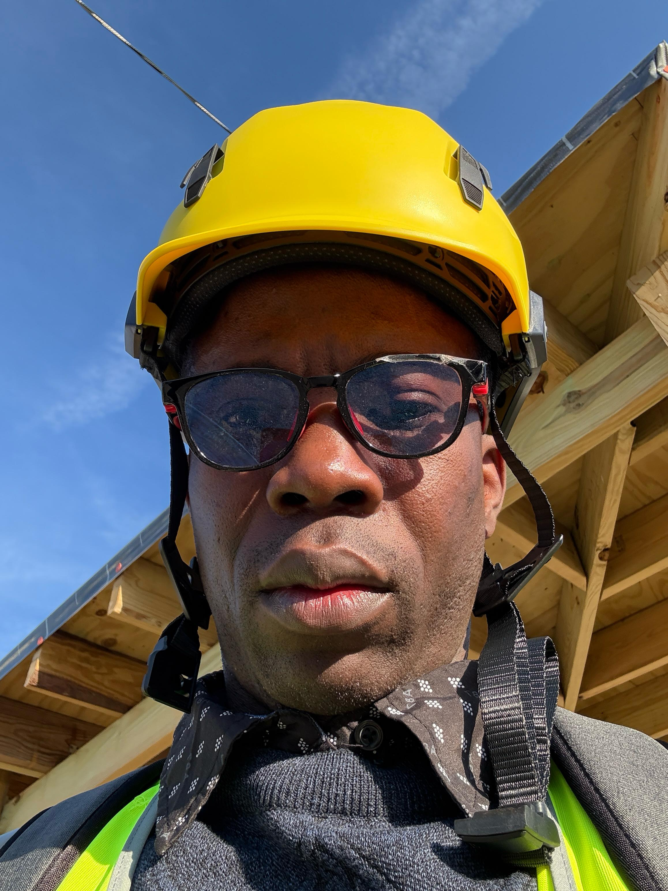
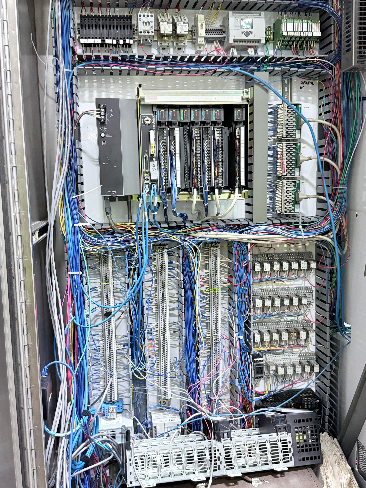
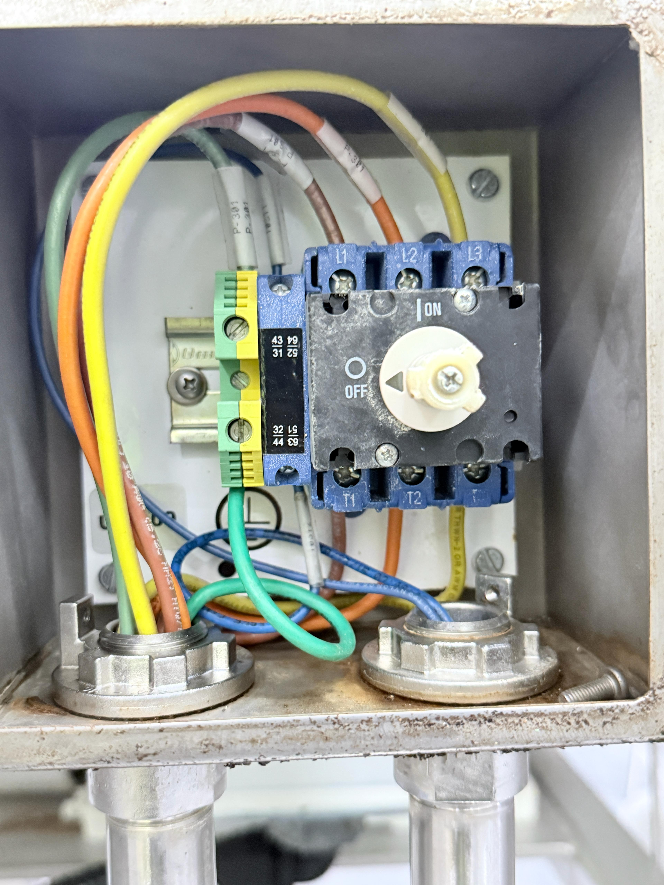
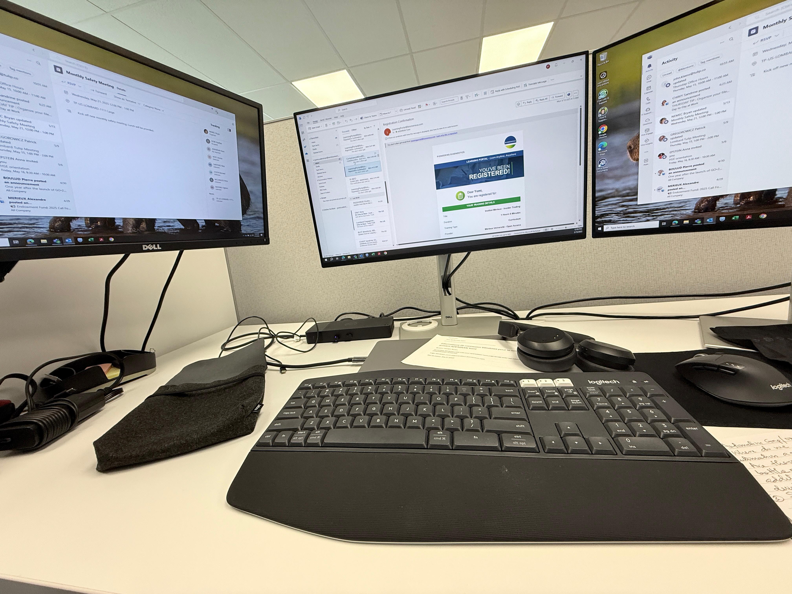
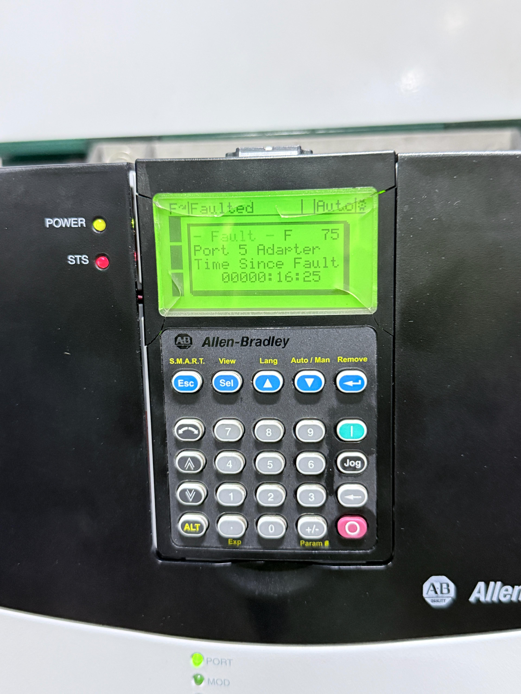
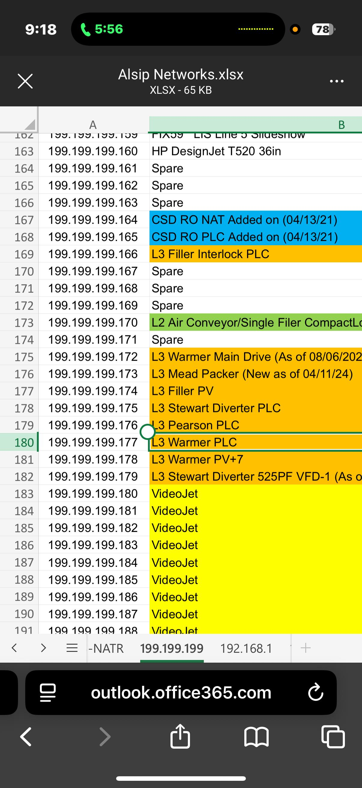

ABOUT ME

Hi There! I'm Adeniran Adewale
ELECTRICAL AND ELECTRONIC ENGINEER | AUTOMATION AND CONTROL EXPERTS
I’m an electrical and electronics engineer passionate about designing smart, reliable
systems that connect technology with everyday life.
- Phone : +1 463 267 1546
- Email : engradeniran@gmail.com
- From : Chicago Illinois,United States
- Language : English, Youruba
- Freelance : Available for consultancy
SERVICES

Hardware & Circuit Design
Expertise in designing, analyzing, and prototyping analog and digital
circuits for applications such as
inverters, audio amplifiers, and power supplies.
Power & Control Systems – Strong background in power systems, transformer design, power electronics, and
renewable energy systems with hands-on experience in PLC programming, industrial IoT, and ladder logic
diagrams.

Manufacturing & Testing
Proficient in PCB layout and design for manufacturability, using test and
measurement equipment such as oscilloscopes, function generators, waveform monitors, power analyzers, and
multimeters.

Video & Audio Technologies
Extensive knowledge of video formatting (Analog, SDI, HD, UHD,
SMPTE-2110) and streaming platforms (OBS, Wirecast, vMix, StreamLab), as well as satellite & IP
technologies (VSAT, DVB-T2, BUC/LNB, DTH, Dante, AES67).

Industrial Automation & Control
Hands-on experience with Siemens TIA Portal, Rockwell Automation Studio
5000, PLC programming (ladder logic, structured text), function block diagrams, and industrial networks
(Profibus, Modbus, Ethernet/IP).

HMI & SCADA Systems
Skilled in HMI software including Wonderware, and FactoryTalk View ME,
with experience in control panel wiring and industrial safety protocols.
Studio Operations & Maintenance – Expertise in camera repair, robotics control, fiber splicing, soldering,
crimping, three-point studio lighting design, and general electronic troubleshooting.
Software & Programming
⦁ Design & Simulation – AutoCAD, MATLAB, Simulink, Pspice.
⦁ Software & Programming – Ladder Logic, Structured Text, Outage Assist, eTerra
⦁ HMI & SCADA, ADMS, OMS – Wonderware HMI, FactoryTalk View ME, data Mapping.
⦁ Industrial Networks – Profibus, Modbus, Ethernet/IP
⦁ Editing & Media – vMix, Avid Liquid, Final Cut, Adobe Creative Suite
⦁ Cabling and splicing - In-depth knowledge of copper (Cat6/6a) and fiber optic cabling (multimode and
single-mode).
RESUME
PROFESSIONAL WORK EXPERIENCE
Electrical and Control Engineer Reyes Coca-Cola Bottling Company, Alsip Chicago, IL
June 2025 - Present | Chicago, IL
- Automation System Support and Troubleshooting: Provides expert support for industrial automation systems. This includes maintaining, troubleshooting, and optimizing PLC systems (Allen-Bradley, Siemens) and HMI/SCADA systems used for line control. Efficiently diagnose faults in electrical control systems and production equipment, offering critical support during equipment failures, line stops, or quality control issues.
- Controls Design and Implementation: Develop and implement control logic for new or upgraded equipment using ladder logic, structured text, or function block. Design and integrate new electrical panels, Motor Control Centers (MCCs), and field wiring layouts. Maintain accuracy by reviewing and updating Electrical schematics, P&IDs, and wiring diagrams using AutoCAD Electrical or EPLAN.
- Data Collection and Performance Monitoring: Interface with industrial networks (Ethernet/IP, Profinet, Modbus TCP) to extract performance data. Support Overall Equipment Effectiveness (OEE) tracking by integrating sensors and controls into Manufacturing Execution Systems (MES). Contribute to digitalization efforts, including line visualization, downtime tracking, and predictive maintenance initiatives.
- Electrical Maintenance and Reliability: Performs root cause analysis (RCA) on recurring electrical faults to enhance system reliability. Assist in developing and implementing robust preventive and predictive maintenance strategies. Ensure all control and power systems strictly adhere to NFPA 70E, NEC, and OSHA standards. Strategic & Collaborative Functions
- Cross-functional Collaboration: Partners with production, quality, and maintenance teams to drive process improvements. Facilitate OEM integration during equipment upgrades or new installations. Collaborate with corporate engineering and automation teams on enterprise-wide initiatives.
- Safety and Compliance: Champions compliance with UL/CE electrical standards, arc flash labeling, and lockout/tagout (LOTO) procedures. Actively participate in Process Safety Management (PSM), especially concerning ammonia refrigeration or chemical dosing systems. Maintain comprehensive documentation for all electrical/control modifications to support audits and ensure traceability.
- Continuous Improvement: Leads or support Kaizen, Six Sigma, and Total Productive Maintenance (TPM) projects to increase uptime and reduce waste. Evaluate and implement cutting-edge sensor technologies (e.g., vision systems, IO-Link, RFID) to optimize line performance. Contribute to energy efficiency and sustainability initiatives, such as Variable Frequency Drive (VFD) retrofits and lighting upgrades.
Automation Engineer - bioMerieux Inc Lombard-Chicago IL
May 2025 till date | Chicago, IL
- Process Automation & Control: Designs and programs, MES, TULIP, and DCS systems to automate bioprocessing equipment such as bioreactors, fermenters, and CIP systems. Developed automation sequences and control logic to ensure precise, repeatable process operations in line with production specifications.
- Data Integrity & Regulatory Compliance: Implements automated systems that comply with GMP, GAMP, and 21 CFR Part 11 standards to ensure audit readiness and data integrity. Supports validation activities by preparing IQ/OQ/PQ documentation and participating in cross-functional qualification efforts.
- System Integration & Data Connectivity: Integrates automation platforms with MES, TULIP, and ERP systems to enable real-time monitoring, batch record generation, and digital traceability. Facilitates seamless data exchange across IT and OT environments using industrial protocols (OPC-UA, Modbus, Profibus,Ethernet/IP REST API).
- Troubleshooting & Process Optimization: Diagnoses and resolves system faults, communication errors, and performance bottlenecks to minimize downtime and maintain production targets. Analyze historical process data to fine-tune control strategies, enhance yield, and reduce variability.
- Technology Transfer & Scale-Up Support: Adapts automation systems to support technology transfer from R&D to commercial-scale manufacturing. Modifies control logic and instrumentation layouts to accommodate scale changes and ensure consistency across sites.
- Cybersecurity & System Maintenance: Implements access control, patch management, and network segmentation strategies to secure automation systems against cyber threats. Schedules preventive maintenance, firmware updates, and hardware replacements to ensure system reliability and regulatory compliance.
- Standards & Best Practices Implementation: Applied ISA-88 and ISA-95 standards to structure batch control and enterprise integration solutions. Standardized automation design templates and documentation to support global alignment and operational excellence.
Amazon Web Services (AWS) Data Center Engineer Carlisle IN
Jan 2025-May 2025 | Chicago, IL
- Cable Infrastructure Design & Implementation: Designed and implemented structured cabling systems for high-performance data centers, ensuring scalability and optimal network performance. Developed and maintained RBI (Rack, Build, and Install) plans to streamline equipment deployment and configuration processes.
- Documentation & Network Mapping: Created and managed detailed patching matrices, enhancing connectivity tracking and change control efficiency. Maintained comprehensive network diagrams, cabling layouts, and patch panel documentation to support ongoing operations and audits.
- Collaboration & Cross-Functional Support: Collaborated with network engineers, electricians, and data center operations teams to align infrastructure with architectural standards. Provided technical support and oversight during installations, ensuring adherence to design specifications and project timelines.
- Site Assessments & Surveys: Conducted thorough site surveys and infrastructure assessments to identify cabling needs, environmental constraints, and installation challenges. Recommended practical solutions to optimize space utilization and minimize interference in multi-floor and confined-space environments.
- Compliance & Industry Standards: Ensured 100% compliance with industry cabling standards (e.g., TIA/EIA, BICSI), data center best practices, and company policies. Standardized cabling practices across projects to ensure quality, reliability, and ease of future maintenance.
- Troubleshooting & Technical Resolution: Diagnosed and resolved connectivity and cabling issues across copper (Cat6/6a) and fiber optic (multimode/single mode) links. Utilized design tools like CAD and Revit to identify infrastructure conflicts and implement z accurate, real-time corrections.
- On-Site Coordination & Installation Oversight: Managed hybrid responsibilities, balancing office-based design work with on-site supervision and technical validation. Coordinated effectively with installation teams to ensure timely execution and quality control across all cabling projects.
Production Specialist: General Electric HealthCare Noblesville, Indiana.
July 2024 -Jan 2025 | Chicago, IL
- Production & Assembly: Successfully assembled and integrated complex medical devices with 99% first-pass yield, ensuring compliance with engineering specifications, SOPs, and regulatory requirements. Optimized machine operations, reducing production cycle time by 15% while maintaining high-quality output.
- Equipment Upgrades & Repairs: Led component-level repairs and system upgrades, improving device performance and extending equipment lifespan. Integrated advanced circuit boards and power options, enhancing system efficiency and reliability.
- Quality Assurance & Testing: Conducted rigorous functional and safety testing, reducing defects by 20% through proactive quality assurance measures. Maintained accurate documentation of inspection results, ensuring full traceability and regulatory compliance.
- Troubleshooting & Process Optimization: Diagnoses and resolves system faults, communication errors, and performance bottlenecks to minimize downtime and maintain production targets. Analyze historical process data to fine-tune control strategies, enhance yield, and reduce variability.
- Technology Transfer & Scale-Up Support: Adapts automation systems to support technology transfer from R&D to commercial-scale manufacturing. Modifies control logic and instrumentation layouts to accommodate scale changes and ensure consistency across sites.
- Maintenance & Downtime Reduction: Implemented preventive maintenance schedules, cutting equipment downtime by 30% and increasing production uptime. Diagnosed and resolved mechanical and electrical issues, minimizing disruptions and optimizing workflow.
- Safety & Compliance: Ensured 100% compliance with industry regulations and GE Healthcare safety standards, maintaining a zero-incident record. Proactively identified and mitigated potential hazards, fostering a safer working environment for team members.
- Process Improvement & Efficiency: Contributed to lean manufacturing initiatives, streamlining workflows and improving efficiency by 10% through value stream mapping. Provided actionable feedback on process bottlenecks, leading to a reduction in material waste and production delays.
- Collaboration & Communication: Worked effectively with cross-functional teams to meet production goals, troubleshoot challenges, and drive continuous improvement. Communicated real-time production updates, ensuring alignment between operations, engineering, and quality teams.
- Inventory Management & Sustainability: Managed raw material inventory, preventing shortages and optimizing supply chain efficiency. Implemented waste reduction strategies, contributing to cost savings and sustainability efforts.
Indiana Public Media, IU Bloomington (WFIU/WTIU)
May 2023 – May 2024 | IU Bloomington
- Equipment Maintenance & Troubleshooting: Inspects, maintains, and troubleshoots broadcast equipment such as cameras, microphones, audio mixers, video switchers, lighting systems, and transmission equipment to ensure optimal performance. Responds to emergencies such as equipment failures or signal disruptions, quickly diagnosing and fixing.
- Technology Integration: Integrated new broadcast technologies and equipment into existing systems, ensuring compatibility and seamless operation across different platforms.
- Broadcast Transmission & Signal Management: Oversaw the transmission of broadcast signals, including monitoring signal quality, managing transmission schedules, and troubleshooting transmission issues over the air, cable, satellite, andYouTube platforms.
- Technical Support: Provides technical support to production teams, assisting with setup, operation, and troubleshooting during live broadcasts and recording sessions.
- IT Service Management:racked and managed ITIL tickets, including incident, service request, problem, and change request tickets, to ensure efficient resolution and service delivery according to ITIL’s best practices.
- Regulatory & Compliance:Ensured that broadcasting operations adhere to industry standards, regulations, and best practices, including audio and video quality standards, signal strength regulations, and FCC compliance.
- Documentation & Reporting: Maintained detailed documentation of equipment inventory, maintenance schedules, troubleshooting procedures, and incident reports. Provided regular reports on system performance and maintenance activities.
- Cross-functional Collaboration: Collaborated with other departments, such as production, programming, and IT, to coordinate the technical aspects of broadcasting projects, ensure smooth workflows, and address cross-functional challenges.
IT Support Specialist | Indiana University | Bloomington, Indiana
| Aug 2022- May 2023 | Chicago, IL
- Help Desk Support: Functioned as the first point of contact for all IT & technical inquiries, resolving a wide range of issues (hardware malfunctions, software errors, network connectivity, peripherals) via phone, email, and remote support tools.
- Desktop & Server Management: Installed, configured, and maintained computer hardware and software according to best practices. Managed user accounts and access permissions within Active Directory and Windows Server environments.
- System Administration: Performed routine maintenance tasks, including system backups (ensuring data integrity through daily verification), software updates, and Active Directory/MDM user management. Maintained data security through EDR and NDR solutions, ensuring all systems have up-to-date security software (firewalls, etc.).
- User Management & Support: Set up new users' accounts and profiles, managed password resets, and provided basic software training and advice to end-users. Established and maintained positive relationships with internal and external stakeholders.
- Service Desk Management: Maintained the IT service desk system, logging all incidents, requests, acknowledgments, and resolutions, ensuring efficient and timely resolution of support tickets.
- Application Support: Supported the rollout of new computer applications and provided technical support on O365-based applications and Portal administration.
- Network & Device Support: Performed network connectivity testing to identify and troubleshoot network issues. Troubleshooted notebook computers, desktops, servers, printers, and network devices. Provided support for copiers, printers, and projectors and performed daily checks of the EDI system to ensure document processing.
Nigerian Television Authority, NTA headquarters |Abuja. Electrical and Broadcast Engineer
2017 - 2022| Abuja NG
- Leadership & Management: Led in-house satellite and broadcast systems technology team, ensuring optimal performance and efficiency. Manage studio, satellite, and outside broadcast infrastructure, overseeing operations to maintain high-quality broadcasts.
- Infrastructure Management: Conceptualize and manage studio building infrastructure projects, ensuring state-of-the-art facilities for broadcasting operations. Integrate and connect Storage Area Network, Media Asset Management, and network-attached storage with editing suite, graphics, and production tools.
- Technical Expertise & Deployment: Successfully deploy and install various digital broadcast and IT equipment, including Network Device Interface (NDI) equipment integration with legacy broadcast equipment. Install robotic camera, PTZ, DSLR, and multi-sensor cameras supporting PoE system, optimizing broadcast operation automation with Ross Overdrive and Sony ELC, DANTE audio distribution network, and AES 67 compliant audio.
- Industrial Power Systems Designed, installed, and optimized electrical infrastructure for industrial applications, ensuring efficient power distribution, system reliability, and compliance with safety standards. Conducted load assessments, selected appropriate cabling, switchgear, and transformers, and integrated protective relays and control systems to enhance operational efficiency.
- PLC Programming & Automation Developing, troubleshooting, and maintaining programmable logic controllers (PLCs) for motor control and industrial automation.
- Electrical Distribution Maintenance Performed routine inspections, diagnostics, and repairs on electrical distribution systems to ensure consistent power supply, system integrity, and compliance with safety regulations. Identified and resolved faults in transformers, circuit breakers, switchgear, and wiring systems, minimizing downtime and preventing potential failures. Testing equipment such as multimeters, oscilloscopes, and thermal imaging cameras was used to assess system performance and implement preventive maintenance strategies.
- Media Asset & Network Management: Manage media assets, including server& storage, security, software application and secure data transportation and management, ensuring efficient content storage and delivery. Coordinate and maintain Content Distribution Network (CDN), including SAN & NAS, for seamless content distribution, real time network traffic monitoring and delivery, Networking protocols, broadcast protocol, Security protocols. Track and manage ITIL tickets, including incident, service request, problem, and change request tickets, to ensure efficient resolution and service delivery according to IT Information Library best practices. Maintain detailed documentation of ITIL tickets, including descriptions, priorities, statuses, and resolutions, to support accountability, reporting, and continuous improvement in IT service management (ITSM).
- Broadcast Innovation & Deployment: Deployed live stream broadcast on Prem-Server and Amazon Web Service cloud platform, expanding audience reach and engagement. Upgraded system video format to active video SMPTE ST 2110 for video, audio, and metadata, enhancing broadcast quality and compatibility, PTP compliant sync, DMX controlled lighting, virtual and augmented reality studio setup, and closed captioning.
- Satellite Operations and Transmission: Design and implement satellite communication systems using satellite dishes, BUCs, LNBs, HPA, and modulators for efficient signal transmission and reception. Tracking and alignment, including inter-satellite link (ISL) operations that allow for communication between ground stations that are not within the "line of sight" of a single satellite. Monitor and maintain satellite links with spectrum analyzers, satellite receivers, AGC, and ACUs to ensure stable and high-quality signal transmission. Diagnose and troubleshoot satellite transmission issues using field strength meters and signal analyzers and provide technical support to maintain seamless broadcast operations.
- Technical Support & Troubleshooting: Provide maintenance for critical network assets and web servers, ensuring continuous broadcast operations. Conduct network monitoring, diagnosis, and troubleshooting, resolving issues promptly to minimize downtime, and cable maintenance (crimping, soldering, splicing).
- Collaboration & Communication: Collaborate with cross-functional teams to ensure seamless integration and operation of broadcast systems. Communicate effectively with stakeholders to understand requirements and deliver tailored solutions. Utilized expertise in network infrastructure, broadcast technology, and IT systems to drive innovation and ensure the smooth operation of broadcasting services at Nigerian Television Authority, the first and largest television network in Africa.
- Deployment and Maintenance: Successfully deployed and installed new digital broadcast equipment, video walls, video matrix system, and media asset management and storage facilities across headquarters and network centers, contributing to enhanced operational capabilities. Managed IT infrastructure and secure data transportation by deploying Transmission Control Protocol/Internet Protocol (TCP/IP, SSH, SSL) across the network. Managed different transmission platforms (VoD, IPTV, Cable TV, Satellite TV, DTT)
- Project Management and Outside Broadcast Assignments: Extensively traveled throughout Nigeria, upgrading editing platforms, and play-out servers, and covering numerous outside broadcast assignments using advanced technologies such as stream boxes, TVU packs, Drones, and flyaway kits with mobile trucks and DSNG.
Automation and Control Engineer | Brewery Nigerian Breweries Plc, Alakia Ibadan, Oyo state, Nigeria.
April 2013 – June 2017 | OYO NG
- PLC & Automation Control: Developed and deployed PLC programs to automate brewing processes, improving operational efficiency and product consistency. Designed and configured HMI interfaces for real-time monitoring and control of fermentation tanks, bottling lines, and packaging systems. Successfully integrated PLC and HMI systems with brewery equipment, including pneumatics, AC/DC motors, conveyors, pasteurizers, palletizers, and corkers, enhancing production automation.
- Troubleshooting & Maintenance Diagnosed and resolved PLC and HMI system issues, reducing unplanned downtime by 30% and improving equipment reliability. Implemented a preventive maintenance program for control systems, minimizing production disruptions and extending equipment lifespan.
- Testing & Validation ● Created and executed test strategies, like Unit Testing, integration testing, Fail-Safe & Emergency Testing, Functional Testing, verification protocols like Code Review, I/O Signal Testing, Communication Testing, Simulation Testing, and validation procedures like Factory Acceptance Testing (FAT), Site Acceptance Testing (SAT), Process Validation, Regulatory Compliance Checks to ensure system integrity and compliance with industry standards.
- Technical Support & Training Provided hands-on technical support and training to brewery operators and maintenance personnel, improving their proficiency in automation system operation and troubleshooting.
- Technology Transfer & Scale-Up Support: Adapts automation systems to support technology transfer from R&D to commercial-scale manufacturing. Modifies control logic and instrumentation layouts to accommodate scale changes and ensure consistency across sites.
- Maintenance & Downtime Reduction: Implemented preventive maintenance schedules, cutting equipment downtime by 30% and increasing production uptime. Diagnosed and resolved mechanical and electrical issues, minimizing disruptions and optimizing workflow.
- Key Achievements: Increased fermentation efficiency by 25% through PLC program optimization for temperature control. Designed and implemented a new HMI interface for the bottling line, improving operator productivity by 30% in identifying and resolving bottle-filling inconsistencies. Successfully integrated a new PLC system with existing pasteurizers to achieve seamless
Technical Manager | Power Distribution Substation Ibadan Electricity Distribution Company, Ibadan, Oyo state
April 2010 – August 2013 | OYO NG
- Power Distribution & Substation Management: Led a team of engineers and technicians in maintaining and optimizing power distribution substations (0.240kV & 0.415kV), ensuring uninterrupted power supply to domestic and industrial customers using Distribution Management System to manage faults and optimize power flow on distribution lines while Outage Management System was deployed to track and restore power outages. Oversaw substation upgrade projects, including transformer installations and equipment modernization, resulting in increased reliability and reduced downtime.
- Transformer Design, Optimization & Repairs: Led the design and optimization of transformers, including Analyzing and modeling transformer behavior for efficiency, selecting optimal core and winding materials for durability, developing robust and cost-effective designs adhering to industry standards, implementing transformer repairs, including 0.415/11kV winding, lamination, and insulation oil remediation, extending equipment lifespan using Energy Management System.
- Automation & SCADA Implementation: Designed and implemented SCADA-based substation power control centers, enabling Supervisory control, real-time monitoring, and fault detection. Remote automation and energy management for enhanced efficiency. Integrated advanced control systems and automation solutions to improve substation operations and reduce maintenance response time.
- Engineering Design & Project Execution Deployed AutoCAD for substation electrical design and drafting, creating detailed layouts of Transformers, circuit breakers, busbars, RMUs, and control panels. Energy flow charts design renderings, and blueprint modifications. Conducted load and stress analysis to ensure the safety, reliability, and efficiency of plant systems.
- Compliance & Risk Management Ensured strict adherence to local, state, and federal regulations, collaborating with regulatory bodies to meet safety and electrical standards.
- Project Management & Documentation Managed construction projects, budgets, and resource allocation, maintaining project timelines for successful execution. Prepared detailed technical reports documenting project progress, challenges, solutions, and outcomes.
Senior Engineer | Solar Power Generation Station Geregu Solar Power Company Limited. Obajana, Kogi state
September 2008 – March 2010 | Kogi NG
- Solar Power & Renewable Energy: Contributed to the development and commissioning of a state-of-the-art solar power generation station, conducting feasibility studies and optimizing energy output.
- Power Systems Design & Testing: Designed and implemented solar PV systems with inverters, trackers, and monitoring systems, while also performing hardware testing on PSUs, BBUs, and integrated rack power systems.
- Technical Support & Maintenance: Led troubleshooting efforts, collaborating with vendors to resolve PSU/BBU issues, integrating power hardware monitoring tools, and managing power lab equipment calibration and repairs.
- Grid Operations & Predictive Maintenance: Applied expertise in power generation, transmission, and distribution while implementing predictive maintenance strategies, reducing downtime, and optimizing system performance using eTerra and Outage Assist.
EDUCATION
Master of Science (MS) degree in Intelligent System Engineering, May 2024
Indiana University, Bloomington. Bloomington, Indiana United States
Master of Science (M.Sc.) degree in Electrical and Electronic Engineering June. 2017
University of Ibadan, Ibadan, Oyo state, Nigeria
Bachelor of Technology (B. Tech) degree in Electrical and Electronic Engineering Dec. 2006
Ladoke Akintola University of Technology, Ogbomosho, Ogbomosho,
Oyo-state, Nigeria
SKILLS AND CERTIFICATION
Management
- Project Management
- Budget Management
- Team Leadership
- Regulatory Complaince
Communication
- Technical Communication
- Presentation Skills
- Report Writing
Certifications
- Registered Engineer (COREN)
- Member of the Nigerian Society of Engineers (NSE),
- Member of the Institution of Electrical Engineer (IEEE)
- Member British Computer Society
Contact Info
Get in touch for project inquires and collaborations,or professional connections.
- Email:engradeniran@gmail.com
- Phone:+1 (463) 267 1546
- Address: